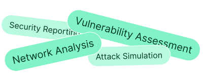

Online Programs
On-Campus Programs
Total Program Fee:
₹35,000/-
₹13,999/-
Price rises to ₹19,999 after 30 seats.
Build practical cybersecurity skills through live mentorship, controlled hacking labs, real-world projects, and AI-powered ethical hacking workflows.
Master networking, Linux, OSINT, penetration testing, system exploitation, cryptography, and defensive security through a practical curriculum built around real cyber threats.

Learn directly from experienced mentors who guide you through ethical hacking tools, attack techniques, security testing, and real-world cybersecurity scenarios.

Gain hands-on experience with 40+ ethical hacking tools used for network scanning, vulnerability assessment, penetration testing, exploitation, traffic analysis, and defensive security.

Perform end-to-end ethical hacking, identify vulnerabilities, document exploitation paths, and build professional security reports inside controlled lab environments.
Analyze major security breaches, malware attacks, OSINT investigations, and penetration-testing cases to understand vulnerabilities and defensive responses.
Create a professional portfolio website to showcase your ethical hacking projects, security reports, certifications, and practical lab experience.
Create a professional portfolio website to showcase your ethical hacking projects, security reports, certifications, and practical lab experience.


Resume upgrades, portfolio reviews, mock interviews & personalized guidance to help you switch roles or move ahead.
Work as a Cybersecurity Analyst Intern on real-world security analysis, reconnaissance, attack simulations, vulnerability assessment, and professional security reporting.

A detailed overview of online ethical hacking course, including all topics, case studies, projects, and more.
Milestone
Duration
Mode
Live Sessions
Project
Milestone
Duration
Mode
Live Sessions
Project

Perform a structured analysis of a local network environment to identify connected devices...

Design and deploy a controlled virtualized penetration testing environment using industry-...

Perform a structured analysis of a local network environment to identify connected devices...
Limited seats available - Reserve your spot today
 Filling Fast14 seats left
Filling Fast14 seats left
 Filling Fast20 seats left
Filling Fast20 seats left
 Filling Fast14 seats left
Filling Fast14 seats left
 Filling Fast20 seats left
Filling Fast20 seats left
Work on industry projects from leading companies. Build a portfolio that stands out and demonstrates your practical expertise to employers.

Perform a structured analysis of a local network environment to identify connected devices, IP addressing schemes, and communication paths, then document the logical network topology.
Master industry-standard ethical hacking tools used for reconnaissance, vulnerability assessment, penetration testing, exploitation, network analysis, and digital forensics.
Upon successful completion, receive an industry-recognized certification that validates your expertise and opens doors to exciting career opportunities.

Upon successful completion, receive an industry-recognized certification that validates your expertise and opens doors to exciting career opportunities.
Your final sprint to becoming a job-ready ethical hacker
Build an ATS-friendly cybersecurity resume.
Showcase projects, labs & security reports.
Build a recruiter-ready LinkedIn profile.
Create a cybersecurity GitHub profile.
Gear Up
Build your personal brand and professional identity.
Pitch Perfect
Present ideas, tell stories, and ace interviews.
Tech Skill Setup
Master the technical side of ethical hacking.
Perform well and score the cut-off percentage to get access to job opportunities at our partner companies:
Take a closer look at Mentors who've been there and done that!

Founder

Cyber Security Professional

Cyber Security Mentor

Cyber Security Mentor

Founder

Cyber Security Professional

Cyber Security Mentor

Cyber Security Mentor
Real Stories from Our Alumni


Become an AI-Powered Ethical Hacker
₹13,999/- Inclusive of all taxes
in Just 8 Weeks?
 Join 20,000+ Successful Learners
Join 20,000+ Successful Learners
Get your every question answered here.
Step into the world of cybersecurity with WsCube Tech's ethical hacking course, designed to help you understand how hackers think and how to defend systems effectively. This course offers a mix of theory and practical training, making it ideal for newbies and professionals alike.
Our ethical hacker class focuses on hands-on learning via projects, simulations, and expert guidance. You will gain in-depth knowledge of network security, penetration testing, and vulnerability assessment. With step-by-step training, you'll develop the skills needed to identify risks and protect digital assets confidently in today's evolving cyber landscape.
Recognized as a leading ethical hacking course in India, this program is customized to match industry standards and job requirements. WsCube Tech ensures you gain practical exposure, certification, and career support to build a successful future in cybersecurity.